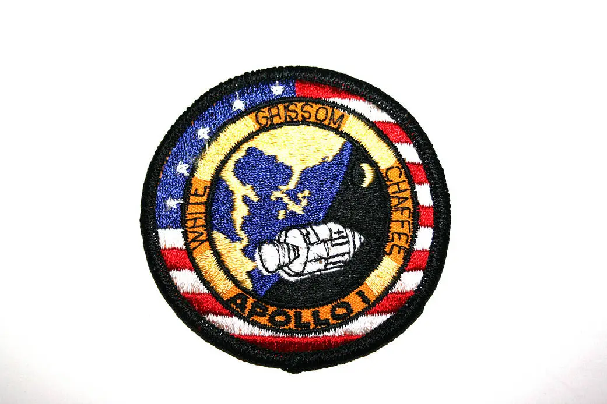
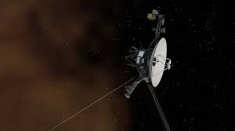
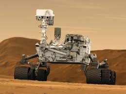
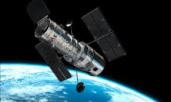

O Que São Explorações Espaciais?
Explorações espaciais são missões científicas e tecnológicas que a humanidade realiza para descobrir e entender o universo além da Terra. Segundo a NASA, elas envolvem o envio de sondas, telescópios e astronautas para coletar dados sobre planetas, estrelas e galáxias, expandindo nosso conhecimento e inspirando inovações na Terra. Desde os primeiros voos orbitais até missões a Marte, essas explorações buscam responder perguntas fundamentais, como a origem da vida e a possibilidade de vida extraterrestre. Elas são divididas em fases: reconhecimento (sobrevoos), estudos detalhados (órbitas e pousos) e missões tripuladas futuras.

Programa Apollo
O Programa Apollo (1969-1972) foi a primeira exploração tripulada além da órbita terrestre. Seis missões pousaram na Lua, coletando amostras e provando que humanos podem explorar outros mundos. A NASA destaca que ele estabeleceu bases para futuras missões, como Artemis.

Missões Voyager
Lançadas em 1977, as sondas Voyager 1 e 2 exploraram Júpiter, Saturno, Urano e Netuno. A Voyager 1 entrou no espaço interestelar em 2012, enviando dados sobre atmosferas planetárias. A NASA as chama de "embaixadoras da Terra", carregando mensagens para civilizações extraterrestres.

Exploração de Marte
Missões como o rover Perseverance (2021) buscam sinais de vida passada em Marte. Orbitadores e rovers analisam solos e preparam para missões humanas. A NASA planeja retorno de amostras em 2030 e colonização sustentável na década de 2040.

Telescópio Espacial Hubble
Lançado em 1990, o Hubble capturou imagens profundas do universo, revelando galáxias e buracos negros. Seu sucessor, o James Webb (2021), observa luz infravermelha para estudar formação de estrelas e planetas. A NASA o mantém ativo com missões de serviço.